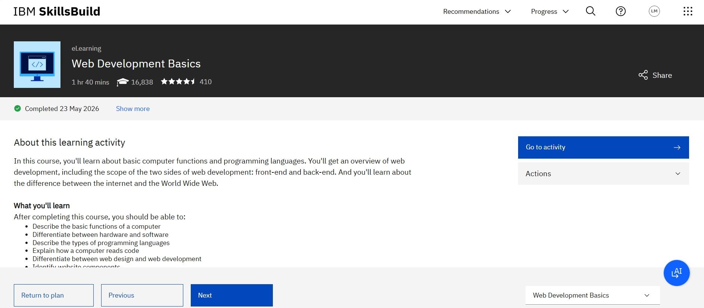
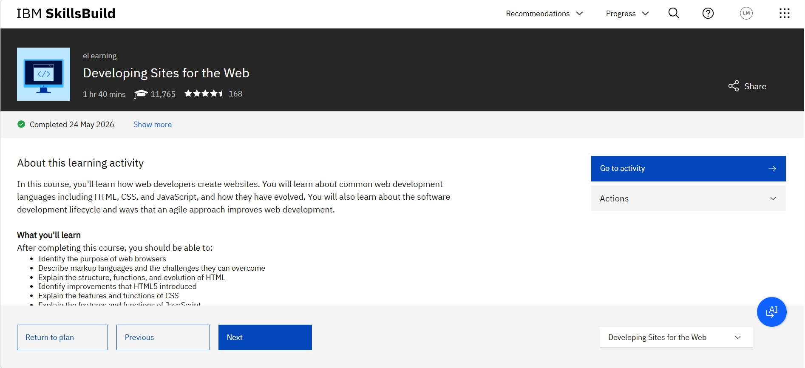

Software Engineering Student
I'm a 4th year Software Engineering student with a passion for building real world applications, currently expanding my skills into web development, learning HTML and CSS.
I enjoy turning ideas into practical projects and I believe in learning by doing.
As part of the Web Development Fundamentals learning plan on IBM SkillsBuild, I have completed 2 out of 7 courses so far.
This website was built using only the knowledge gained from these 2 completed courses proving that even early progress can produce real, practical results.

✅ Web Development Basics Completed 23 May 2026

✅ Developing Sites for the Web Completed 24 May 2026
This website was built as a hands-on practice project for the Web Development Fundamentals course on IBM SkillsBuild, to apply HTML and CSS skills in a real project.
This is just the beginning built with knowledge from only 2 out of 7 courses.
As I continue with the remaining courses, I plan to enhance this website or make another project to further apply and demonstrate the new skills I acquire.